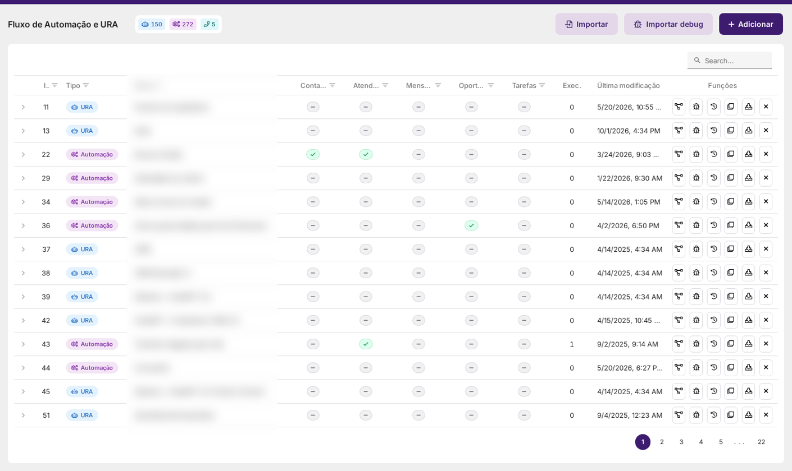

Automações e URA — Catálogo de Elementos
Os 144 elementos do editor de Fluxo de Automação e URA, com campos, ramos, variáveis e exemplos verificados.
{{ }} e a linguagem de fluxo usada para montar tudo isso. Dois elementos que
existem no editor mas não constam do catálogo da API — sentDTMF e startCall — aparecem
nos respectivos grupos com a ressalva técnica de cada um.

1. Como ler as fichas de elemento
Cada elemento tem uma ficha com o seguinte conteúdo:
| Parte da ficha | O que traz |
|---|---|
| O que faz | A função do elemento e as observações de comportamento que a própria plataforma registra. |
| Disponível em | Em quais filas o elemento pode ser usado (alguns só existem na voz, outros só na automação). |
| Como se escreve | A forma dele na linguagem de fluxo, com o rótulo e os campos. |
| Saídas e ramos | Para onde o fluxo vai depois dele: seta, ramo case, else ou a porta body do laço. |
| Campos | Cada campo com o tipo e se é obrigatório. |
| Exemplo de uso | Um fluxo completo e verificado que usa o elemento. |
2. Os três tipos de fluxo
Ao criar um fluxo escolhe-se o tipo. O tipo define quais elementos ficam disponíveis:
| Tipo | Para que serve | Exemplo de elemento exclusivo |
|---|---|---|
| URA | Fluxo de atendimento por mensagem — conversa com o cliente no chat, com perguntas, opções e espera de resposta. | question, options |
| Automação | Fluxo de bastidor: roda por gatilho (mensagem recebida, abertura de atendimento, encerramento, tempo, mudança no CRM) sem prender a conversa. | addOpportunity, addPersistent |
| URA telefônica | Fluxo de voz: toca áudio, lê o teclado do telefone e desvia a chamada. | callPlayAudio, sentDTMF |
3. A linguagem do fluxo
Todo fluxo pode ser lido e escrito como texto. É esse mesmo texto que a importação e a exportação usam, e é ele que aparece nos exemplos deste capítulo.
- Um elemento por linha:
rotulo: tipoDoElemento campo=valor outroCampo=valor. - A linha seguinte continua o fluxo. Nada de escrever "próximo elemento": a queda é implícita.
- Desvios e fim:
-> outroRotulodesvia;-> endencerra a cadeia. - Valores entre aspas duplas. Texto longo aceita
""" ... """. - Ramos abrem na mesma linha do elemento:
checa: varCondition value="{{total}}" { case alto conditionOperator=">" conditionValue="100" { ... } else { ... } }. - Laço:
laco: loop mode="forEach" list="{{lista}}" { body { ... -> laco } }— o último elemento do corpo volta para o laço. - Elemento já existente: o que não for escrito permanece como está; para apagar um campo, escreva
!campo.
4. Índice dos 144 elementos
['| Elemento | O que faz | Grupo |
|---|---|---|
| message | Envia uma mensagem para o cliente. Não aguarda resposta e segue para o próximo elemento imediatamente. | Mensagens e conteúdo |
| question | Enviar uma mensagem com uma pergunta para o cliente. Interrompe o fluxo de execução da URA até que o cliente envie uma nova mensagem. | Mensagens e conteúdo |
| options | Envia uma mensagem com múltiplas opções para o cliente e segue o fluxo de execução de acordo com a opção escolhida pelo cliente. | Mensagens e conteúdo |
| info | Adiciona uma mensagem de informação ao atendimento. A mensagem de informação só poderá ser vista pelo atendente. | Mensagens e conteúdo |
| terminate | Encerra o atendimento associado, quando este existir. O elemento terminate não possui um próximo elemento, pois ele encerra o fluxo de execução — e... | Fluxo, lógica e gatilhos |
| transfer | Transfere o atendimento associado, quando este existir. O elemento transfer não possui um próximo elemento, pois ele encerra o fluxo de execução — ... | Fluxo, lógica e gatilhos |
| marker | Adiciona uma etiqueta de atendimento ao atendimento. As etiquetas são utilizadas para classificar e priorizar os atendimentos, além de fornecer ide... | Fluxo, lógica e gatilhos |
| timetable | Controla o fluxo de acordo com a data / horário. Permite que o fluxo de execução siga por caminhos diferentes dependendo do dia e horário. | Fluxo, lógica e gatilhos |
| url | Envia uma mensagem com um botão de ação para o cliente. O botão pode ser uma URL ou um dado para ser copiado. Em fila Telegram vale para o tipo atu... | Mensagens e conteúdo |
| varCondition | Controla o fluxo de acordo com o valor de uma variável ou com expressões lógicas. Cada item de options é um ramo; os ramos são testados NA ORDEM e ... | Fluxo, lógica e gatilhos |
| request | Envia uma requisição HTTP para um servidor externo. O resultado da requisição é salvo em variáveis e pode ser utilizado em outras partes do fluxo d... | Integrações, webhooks e extensões |
| protocol | Associa um protocolo ao atendimento. O protocolo pode ser gerado automaticamente ou pré-definido. | Fluxo, lógica e gatilhos |
| searchContact | Busca um contato na base de dados do sistema. O contato pode ser buscado por CPF/CNPJ, telefone ou email. | Contatos e dados persistentes |
| addContact | Adiciona um novo contato na base de dados do sistema. | Contatos e dados persistentes |
| userAvailable | Verifica o estado de um agente de atendimento com base em seu ID, salvando o resultado em uma variável. | Atendimento, fila e bloqueios |
| sleep | Pausa a execução do fluxo por um determinado período de tempo. | Fluxo, lógica e gatilhos |
| setTriggers | Aplica um conjunto de gatilhos ao atendimento corrente. Se não houver atendimento associado, esse elemento será ignorado. | Fluxo, lógica e gatilhos |
| newVar | Cria uma variável com o valor informado, ou altera o valor de uma variável criada pelo fluxo. Com o prefixo "global." no nome, grava uma variável g... | Fluxo, lógica e gatilhos |
| jscode | Executa um código JavaScript no servidor. O código pode ser utilizado para realizar operações complexas que não são possíveis com os elementos padrão. | Fluxo, lógica e gatilhos |
| sendAlert | Envia um alerta para um conjunto de usuários do sistema. | Atendimento, fila e bloqueios |
| cancelMessage | Interrompe o envio de uma mensagem que será enviada. | Mensagens e conteúdo |
| removeTrigger | Remove o gatilho que provocou a execução da automação. | Fluxo, lógica e gatilhos |
| lock | Aplica um bloqueio ao atendimento associado, vinculando a um agente específico, de forma que o atendimento não possa ser | Atendimento, fila e bloqueios |
| waitMessage | Interrompe o fluxo de execução da automação até que o cliente envie uma nova mensagem. | Fluxo, lógica e gatilhos |
| execAutomation | Executa uma automação específica como parte do fluxo. O fluxo de execução será transferido para a automação selecionada. | Fluxo, lógica e gatilhos |
| editContact | Edita um contato existente na base de dados do sistema. | Contatos e dados persistentes |
| openChat | Abre um novo atendimento com base no número de telefone informado. Em fila Telegram, o número é resolvido para a conta correspondente no Telegram a... | Atendimento, fila e bloqueios |
| searchChat | Busca um atendimento atualmente em aberto, em andamento, com base no dado informado e associa-o ao fluxo corrente. | Atendimento, fila e bloqueios |
| openChatCloud | Abre um novo atendimento com base no número de telefone informado. | Atendimento, fila e bloqueios |
| sendMail | Envia um e-mail para o cliente com base em um modelo pré-cadastrado. | Mensagens e conteúdo |
| sendNotification | Envia uma notificação para um ou mais usuários do sistema (agentes, supervisores ou administradores). | Atendimento, fila e bloqueios |
| createTask | Criar uma nova tarefa no sistema. | Tarefas, instâncias e administração |
| addOpportunity | Adiciona uma nova oportunidade no sistema. | CRM, oportunidade e carrinho |
| winOpportunity | Encerra uma oportunidade existente marcando-a como ganha. Se o estágio onde a oportunidade está associada não for um estágio que permite o ganho, e... | CRM, oportunidade e carrinho |
| loseOpportunity | Encerra uma oportunidade existente marcando-a como perdida. Em fila de WebChat V2 com CARRINHO SINCRONIZADO, não aponte este elemento para a oportu... | CRM, oportunidade e carrinho |
| editOpportunity | Edita uma oportunidade existente no sistema. | CRM, oportunidade e carrinho |
| cloneOpportunity | Clona uma oportunidade existente, criando uma nova oportunidade com os mesmos dados da oportunidade original. | CRM, oportunidade e carrinho |
| moveOpportunity | Move uma oportunidade existente para um novo estágio do funil de vendas. Em fila de WebChat V2 com CARRINHO SINCRONIZADO, NÃO use este elemento par... | CRM, oportunidade e carrinho |
| searchOpportunity | Busca uma oportunidade na base de dados do sistema e disponibiliza seus dados em uma variável. | CRM, oportunidade e carrinho |
| transferOpportunity | Transfere uma oportunidade para um novo responsável. | CRM, oportunidade e carrinho |
| insertFileOpportunity | Associa um arquivo a uma oportunidade do sistema. | CRM, oportunidade e carrinho |
| showForm | Exibe um formulário pré cadastrado para que o agente possa preencher. | Pesquisas, formulários e WebChat |
| clearOpportunityTasks | Limpa todas as tarefas associadas a uma oportunidade. As tarefas são excluídas. | CRM, oportunidade e carrinho |
| freezeOpportunity | Congela uma oportunidade, ocultando ela da visualização do agente. | CRM, oportunidade e carrinho |
| unfreezeOpportunity | Descongela uma oportunidade congelada. | CRM, oportunidade e carrinho |
| shareContact | Compartilha um contato com o cliente, enviando seus dados na forma de uma mensagem. | Mensagens e conteúdo |
| removeAllTriggers | Remove todos os gatilhos associados ao atendimento corrente. Se não houver atendimento corrente, esse elemento é ignorado. | Fluxo, lógica e gatilhos |
| reopenOpportunity | Reabre uma oportunidade que foi fechada anteriormente. | CRM, oportunidade e carrinho |
| addPersistent | Adiciona um valor persistente ao banco de dados. Valores persistentes são armazenados no banco de dados e podem ser acessados em qualquer, inclusiv... | Contatos e dados persistentes |
| searchPersistent | Busca um valor persistente no banco de dados e disponibiliza seu valor em uma variável. | Contatos e dados persistentes |
| removePersistent | Remove um valor persistente do banco de dados. | Contatos e dados persistentes |
| replyComment | Responde a um comentário recebido em uma publicação do instagram. | Mensagens e conteúdo |
| searchInstance | Esse elemento só está disponível em instâncias especiais de parceiros que realizam a revenda do sistema. | Tarefas, instâncias e administração |
| createInstance | Esse elemento só está disponível em instâncias especiais de parceiros que realizam a revenda do sistema. | Tarefas, instâncias e administração |
| editInstanceContactDetails | Esse elemento só está disponível em instâncias especiais de parceiros que realizam a revenda do sistema. | Tarefas, instâncias e administração |
| markInstanceForExclusion | Esse elemento só está disponível em instâncias especiais de parceiros que realizam a revenda do sistema. | Tarefas, instâncias e administração |
| reactivateInstance | Esse elemento só está disponível em instâncias especiais de parceiros que realizam a revenda do sistema. | Tarefas, instâncias e administração |
| blockInstance | Esse elemento só está disponível em instâncias especiais de parceiros que realizam a revenda do sistema. | Tarefas, instâncias e administração |
| unblockInstance | Esse elemento só está disponível em instâncias especiais de parceiros que realizam a revenda do sistema. | Tarefas, instâncias e administração |
| restartInstance | Esse elemento só está disponível em instâncias especiais de parceiros que realizam a revenda do sistema. | Tarefas, instâncias e administração |
| restartInstanceContainer | Esse elemento só está disponível em instâncias especiais de parceiros que realizam a revenda do sistema. | Tarefas, instâncias e administração |
| updateInstance | Esse elemento só está disponível em instâncias especiais de parceiros que realizam a revenda do sistema. | Tarefas, instâncias e administração |
| sendTemplate | Envia um template de mensagem pré aprovada para o cliente. | Mensagens e conteúdo |
| markTaskAsDone | Marca uma tarefa como concluída. | Tarefas, instâncias e administração |
| addToWaitingList | Envia o atendimento associado ao fluxo para a fila de espera. | Atendimento, fila e bloqueios |
| removeFromWaitingList | Remove o atendimento associado ao fluxo da fila de espera. | Atendimento, fila e bloqueios |
| addInformationCard | Adiciona um cartão de informações ao atendimento associado ao fluxo. | Pesquisas, formulários e WebChat |
| removeInformationCard | Remove um cartão de informações do atendimento associado ao fluxo. | Pesquisas, formulários e WebChat |
| showSnackNotification | Exibe uma notificação de snack para o agente responsável pelo atendimento associado ao fluxo. | Atendimento, fila e bloqueios |
| addInformationCardToMessage | Adiciona um cartão de informações a uma mensagem. | Pesquisas, formulários e WebChat |
| removeInformationCardFromMessage | Remove um cartão de informações associado a uma mensagem. | Pesquisas, formulários e WebChat |
| sendFlow | Envia uma mensagem com um Whatsapp Flow pré-aprovado para o cliente. | Mensagens e conteúdo |
| clearFlowDataFromMessage | Limpa os dados da resposta de um Whatsapp Flow da mensagem mais recente recebida, excluindo inclusive do banco de dados. | Mensagens e conteúdo |
| aiAssistant | Entrega o controle do atendimento para o assistente de IA. | IA e assistentes |
| aiAddContextToAssistant | Esse elemento adiciona informação ao contexto do assistente de IA. | IA e assistentes |
| aiProcessFile | Processa um arquivo ou uma informação de texto utilizando uma Inteligência Artificial (LLM, como gpt4o ou similar). | IA e assistentes |
| aiStopAssistant | Interrompe a execução do assistente de IA, mesmo que esse não tenha concluído o atendimento nem solicitado o encerramento ou transferência. | IA e assistentes |
| aiStopMessage | Interrompe o envio de uma mensagem gerada pelo assistente de IA. | IA e assistentes |
| aiTts | Converte um texto em um arquivo de áudio utilizando um modelo de Inteligência Artificial (TTS) da OpenAI, do Google ou da OpenRouter. | IA e assistentes |
| generateDocumentFromTemplate | Gera um documento a partir de um modelo pré cadastrado no sistema. O modelo é um documento com variáveis posicionadas ao longo do conteúdo, que ser... | IA e assistentes |
| blockChatManualEnd | Impede que o atendimento associado ao fluxo seja encerrado manualmente por um agente humano. Se nenhum atendimento associado estiver disponível, es... | Atendimento, fila e bloqueios |
| unblockChatManualEnd | Remove o impedimento de encerramento manual por um agente humano do atendimento associado ao fluxo. Se nenhum atendimento associado estiver disponí... | Atendimento, fila e bloqueios |
| callPlayAudio | Toca um áudio na chamada, que pode ou não ser interrompido se o cliente digitar algo, conforme a configuração. | Telefonia (URA telefônica) |
| callWaitClientReply | Interrompe o fluxo de automação aguardando uma entrada do usuário pelo teclado numérico. | Telefonia (URA telefônica) |
| callTransfer | Transfere a chamada para o destino numérico especificado. | Telefonia (URA telefônica) |
| callTerminate | Encerra a chamada com um hangup. | Telefonia (URA telefônica) |
| requestLocation | Envia uma mensagem solicitando que o cliente compartilhe sua localização. | Mensagens e conteúdo |
| aiAssistantSingleRequest | Envia uma solicitação única direta a um assistente virtual por IA e aguarda a resposta. Diferente do aiAssistant, esse elemento não guarda contexto... | IA e assistentes |
| webhookReply | Define a resposta que será enviada quando o fluxo estiver sendo executado como resultado de uma captura de webhook. | Integrações, webhooks e extensões |
| aiDefineAssistantResult | Define o resultado de um atendimento por assistente virtual por IA (sucesso ou falha), para fins de estatística. Sem assistantId, aplica ao assiste... | IA e assistentes |
| sendProductMessage | Envia uma mensagem de catálogo de produtos para o cliente. Permite enviar um ou mais produtos do catálogo da empresa; com vários, pode-se apresenta... | Catálogo, pedidos e estoque |
| addOrEditProductToOpportunity | Adiciona ou modifica um produto a uma oportunidade no CRM do sistema. Permite definir quantidade, desconto e estratégia de conflito quando o produt... | CRM, oportunidade e carrinho |
| removeProductFromOpportunity | Remove um produto de uma oportunidade no CRM do sistema. O produto é completamente removido da lista de produtos da oportunidade. | CRM, oportunidade e carrinho |
| clearProductListOfOpportunity | Limpa completamente a lista de produtos associados a uma oportunidade no CRM do sistema. Todos os produtos serão removidos da oportunidade. | CRM, oportunidade e carrinho |
| sendOrder | Envia uma mensagem de pedido (order) para o cliente. Funciona em filas WhatsApp Cloud API (cartão de pedido nativo) e também em filas de WebChat V2... | Catálogo, pedidos e estoque |
| updateOrderStatus | Atualiza o status de um pedido (order) enviado para o cliente. Funciona em filas WhatsApp Cloud API (status de pedido nativo) e também em filas de ... | Catálogo, pedidos e estoque |
| showFormSync | Exibe um formulário para o atendente preencher e aguarda o preenchimento antes de continuar o fluxo. Diferente do showForm, esse elemento interromp... | Pesquisas, formulários e WebChat |
| showConfirmationDialogSync | Exibe uma caixa de diálogo de confirmação para o atendente e aguarda a resposta antes de continuar o fluxo. O resultado (positivo ou negativo) é sa... | Pesquisas, formulários e WebChat |
| showInformationDialog | Exibe uma caixa de diálogo de informação para o atendente. Esse elemento não aguarda resposta, apenas exibe a informação. | Pesquisas, formulários e WebChat |
| cancelOpportunityMove | Cancela o movimento de etapa de uma oportunidade que estava em andamento. Esse elemento só tem efeito quando executado em uma automação disparada p... | CRM, oportunidade e carrinho |
| cancelOpportunityWin | Cancela o processo de ganho de uma oportunidade que estava em andamento. Esse elemento só tem efeito quando executado em uma automação disparada po... | CRM, oportunidade e carrinho |
| generateQrCode | Gera um código QR a partir de um texto e salva o ID do arquivo gerado em uma variável. | Integrações, webhooks e extensões |
| getProductDetails | Busca um produto no catálogo do sistema, pelo ID ou pelo código interno, e disponibiliza seus detalhes em variáveis. | Catálogo, pedidos e estoque |
| pmScreenshot | Envia um comando para o aplicativo desktop do usuário alvo capturar uma screenshot da tela. Elemento do módulo de monitoramento de produtividade (PM). | IA e assistentes |
| pmVideoCapture | Envia um comando para o aplicativo desktop do usuário alvo gravar um vídeo da tela, com a duração configurada. Elemento do módulo de monitoramento ... | IA e assistentes |
| businesshoursCheck | Verifica se o momento atual está dentro do horário de funcionamento de uma configuração de horários cadastrada no sistema (considerando horário sem... | Fluxo, lógica e gatilhos |
| addTicket | Cria um novo ticket no sistema de tickets, com status Aberto. | Tickets (mesa de ajuda) |
| editTicket | Edita os campos de um ticket existente a partir do seu ID. Podem ser alterados o assunto, a prioridade e o sub-motivo, além de adicionar etiquetas ... | Tickets (mesa de ajuda) |
| searchTicket | Busca tickets no sistema de tickets. A busca pode ser feita por ID ou número do ticket (busca direta), ou por telefone ou e-mail (busca os contatos... | Tickets (mesa de ajuda) |
| resolveTicket | Marca um ticket como resolvido a partir do seu ID. O ticket tem seu status alterado para Resolvido, a data de resolução registrada e o cumprimento ... | Tickets (mesa de ajuda) |
| reopenTicket | Reabre um ticket resolvido a partir do seu ID. O ticket volta ao status Aberto e o prazo de SLA é recalculado com base no tempo que restava no mome... | Tickets (mesa de ajuda) |
| assignTicket | Atribui um ticket a um responsável a partir do seu ID. A atribuição pode ser direta para um agente específico (assignType 1) ou por distribuição au... | Tickets (mesa de ajuda) |
| escalateTicket | Escala um ticket para o próximo nível de atendimento a partir do seu ID. O ticket é movido para uma fila ativa do próximo nível de escalonamento co... | Tickets (mesa de ajuda) |
| contactClientTicket | Move um ticket para o status "Aguardando cliente" (3), a partir do ID do ticket. Opcionalmente registra um comentário público no ticket informando ... | Tickets (mesa de ajuda) |
| addCommentTicket | Adiciona um comentário a um ticket, a partir do ID do ticket. O comentário pode ser externo (público, dispara o evento "commented", que pode aciona... | Tickets (mesa de ajuda) |
| linkContactTicket | Vincula um contato a um ticket existente, a partir do ID do ticket. O contato pode ser o contato associado ao atendimento atual ou um contato espec... | Tickets (mesa de ajuda) |
| unlinkContactTicket | Remove a vinculação entre um contato e um ticket, a partir do ID do ticket. O contato pode ser o contato associado ao atendimento atual ou um conta... | Tickets (mesa de ajuda) |
| changeStatusTicket | Altera o status de um ticket, a partir do ID do ticket. Aceita apenas os status 1 (Aberto), 2 (Em andamento), 4 (Resolvido) e 6 (Aguardando recurso... | Tickets (mesa de ajuda) |
| addTagTicket | Adiciona uma tag previamente cadastrada no sistema a um ticket existente, a partir do ID do ticket e do ID da tag. | Tickets (mesa de ajuda) |
| changeStageTicket | Altera o estágio de um ticket, a partir do ID do ticket e do ID do novo estágio. A transição do estágio atual para o novo precisa estar permitida n... | Tickets (mesa de ajuda) |
| aiProvokeAssistant | Esse elemento adiciona um contexto ao assistente de IA associado ao atendimento e dispara o processamento do assistente, fazendo-o reagir ativament... | IA e assistentes |
| generateSurveyFormLink | Gera um link público de pesquisa do módulo Pesquisas e grava a URL gerada em variáveis do fluxo. A pesquisa precisa estar publicada. O link recebe ... | Pesquisas, formulários e WebChat |
| submitSurveyFormResponse | Submete uma resposta de pesquisa do módulo Pesquisas diretamente, sem que o cliente precise acessar o link público. A pesquisa precisa estar public... | Pesquisas, formulários e WebChat |
| editSurveyFormResponse | Preenche perguntas ocultas (marcadas como is_hidden na pesquisa) de uma resposta de pesquisa já submetida, com valores vindos de variáveis do fluxo... | Pesquisas, formulários e WebChat |
| changeMessageVisualGroup | Altera o grupo de visualização (fk_visualgroup) de uma mensagem do chat atual, restringindo quem pode vê-la. Somente mensagens do próprio atendimen... | Mensagens e conteúdo |
| scheduleAutomation | Agenda a execução de uma automação sobre o atendimento atualmente associado ao fluxo, após o número de segundos informado. O id do agendamento gera... | Fluxo, lógica e gatilhos |
| cancelSchedule | Cancela um agendamento de execução de automação previamente criado (pelo elemento "Agendar execução de automação"), a partir do id do agendamento. ... | Fluxo, lógica e gatilhos |
| sendForm | Envia um formulário personalizado (pré cadastrado no sistema) para o visitante do WebChat (V2). | Pesquisas, formulários e WebChat |
| sendFormFlow | Envia um fluxo de formulários (multi-etapas, pré cadastrado no sistema) para o visitante do WebChat (V2). | Pesquisas, formulários e WebChat |
| sendInformationCard | Envia uma MENSAGEM de cartão de informação para o visitante do WebChat V2 (type 26). A própria mensagem é o cartão, renderizado no design do client... | Pesquisas, formulários e WebChat |
| requestPushPermission | Envia ao visitante do WebChat V2 (type 26) uma MENSAGEM com um botão que abre o diálogo de notificações do cliente, onde ele pode ativar (subscreve... | Pesquisas, formulários e WebChat |
| generateWebchatMigrationLink | Gera um link EFÊMERO DE USO ÚNICO para MIGRAR o atendimento atual para uma fila WebChat V2 (type 26), e grava a URL gerada numa variável do fluxo. ... | Pesquisas, formulários e WebChat |
| publishToExtension | Publica uma mensagem no CANAL de uma INSTALAÇÃO DE EXTENSÃO, entregue em tempo real às telas dos usuários de destino. Serve para o fluxo avisar a i... | Integrações, webhooks e extensões |
| lockOpportunityCart | Bloqueia o carrinho de uma oportunidade do CRM: a lista de produtos e o valor do frete passam a ser somente leitura para TODOS os usuários do siste... | CRM, oportunidade e carrinho |
| unlockOpportunityCart | Desfaz o bloqueio aplicado por lockOpportunityCart: a lista de produtos e o valor do frete voltam a ser editáveis pelos usuários no formulário da o... | CRM, oportunidade e carrinho |
| sendCartButton | Envia ao cliente uma MENSAGEM com um botão que ABRE O CARRINHO dele para conferência. | CRM, oportunidade e carrinho |
| replaceOpportunityCart | Substitui o carrinho INTEIRO de uma oportunidade pelo conteúdo de um objeto JSON. Serve para reescrever a lista de itens de uma vez a partir da res... | CRM, oportunidade e carrinho |
| sendSurveyFormMessage | Envia ao cliente do atendimento atual uma MENSAGEM DE PESQUISA do módulo Pesquisas. A pesquisa precisa estar publicada. | Pesquisas, formulários e WebChat |
| loop | Laço de repetição declarado — o jeito certo de repetir um trecho do fluxo (em vez de ligar a saída de um elemento de volta a um elemento anterior).... | Fluxo, lógica e gatilhos |
| queueChats | Lista os atendimentos ABERTOS de uma fila no momento da execução e grava o resultado em variáveis, sem alterar nada. Só leitura; tem saída única. | Atendimento, fila e bloqueios |
| blockChatManualTransfer | Impede que o atendimento associado ao fluxo seja transferido manualmente por um agente humano — para outro agente, para a fila ou por filtro de dis... | Atendimento, fila e bloqueios |
| unblockChatManualTransfer | Remove o impedimento de transferência manual por um agente humano do atendimento associado ao fluxo. Se nenhum atendimento associado estiver dispon... | Atendimento, fila e bloqueios |
| decrementProductStock | Diminui a "Quantidade em estoque" do CADASTRO de cada produto — não mexe no carrinho. Serve para o chatcommerce: ao fechar o pedido (por exemplo, n... | Catálogo, pedidos e estoque |
| incrementProductStock | Aumenta a "Quantidade em estoque" do CADASTRO de cada produto — não mexe no carrinho. Serve para devolver ao estoque o que foi baixado por decremen... | Catálogo, pedidos e estoque |
5. Como testar antes de publicar
- Monte ou edite o texto do fluxo.
- Valide antes de salvar: o próprio sistema compila o texto e devolve erro de sintaxe com linha e coluna, e os erros de configuração por elemento.
- Só depois grave. Ao gravar, cada versão fica no histórico e pode ser comparada e restaurada.
Todos os exemplos deste capítulo passaram por essa compilação antes de serem publicados.
6. Do texto ao arquivo .ivr
O mesmo fluxo existe em duas formas, e vale entender a diferença para não perder tempo:
| Forma | Onde aparece | Para que serve |
|---|---|---|
| Linguagem de fluxo (texto) | Nos exemplos deste capítulo e nas telas de importação/exportação por API e no histórico de versões. | Ler, comparar, versionar e criar/atualizar o fluxo por API. |
Arquivo .ivr | Botão Exportar da tela Fluxo de Automação e URA; é o que o botão Importar aceita. | Levar um fluxo pronto de um ambiente para outro, com os elementos já ligados. |
Por dentro, o .ivr é o registro do fluxo codificado: um JSON com os dados do cabeçalho
(nome, tipo, timeout) e o campo options com a lista de elementos. Cada elemento tem
id, type (o número do tipo), posição na tela (x/y) e
config (os campos da ficha). As ligações ficam em config.nextElementId; os ramos de uma
condição ficam em config.options, cada um com o seu nextElementId.
0 é Enviar mensagem, 4 é Encerrar
atendimento, 5 é Transferir atendimento, 13 é Gerar protocolo e assim por diante — é
exatamente o tipo interno mostrado em cada ficha deste capítulo.
Todo exemplo deste capítulo tem as duas formas: o texto (para ler e entender) e o arquivo .ivr
(para importar e usar).